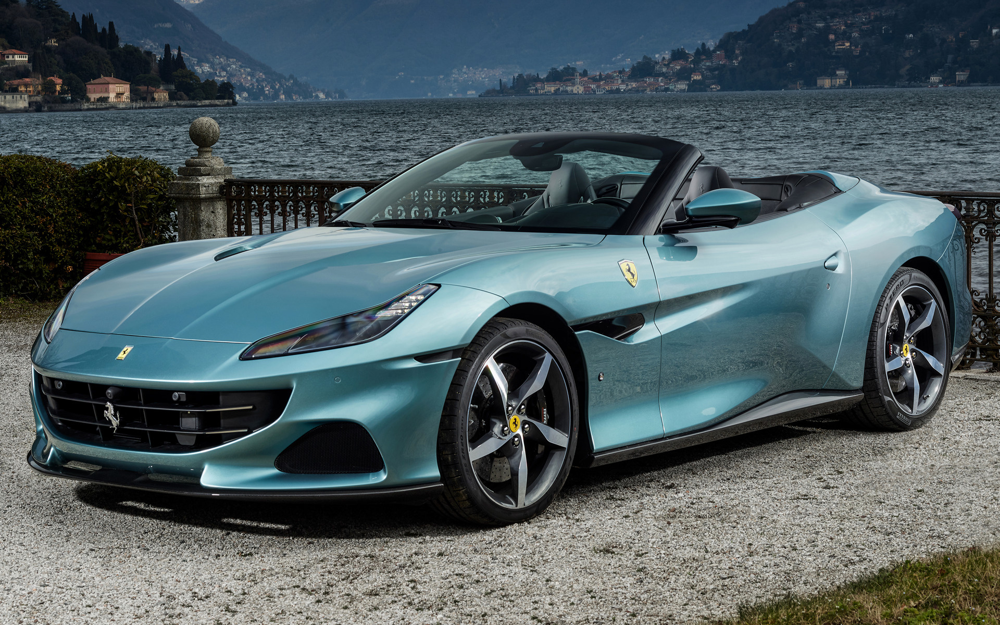

The Ferrari Portofino (Type F164) is a grand touring sports car produced by the Italian automotive manufacturer Ferrari. It is a two-door 2+2 hard top convertible, with a 3.9 L twin-turbo V8 gasoline engine and a 0–60 mph (0–97 km/h) time of 3.5 seconds. The car is named after the village of Portofino on the "Italian Riviera" and succeeds the company's previous V8 grand tourer, the California T. The car was unveiled at the 2017 Frankfurt Motor Show.
On 9 July 2018, Ferrari received the Red Dot: Best of the Best award for the Portofino's groundbreaking design. The international judging panel stated that the Portofino “embodies an impressive evolutionary advancement" and "fascinates with an exciting design language," with the vehicle's elegance "further underscored by the uncompromising quality in material and workmanship."